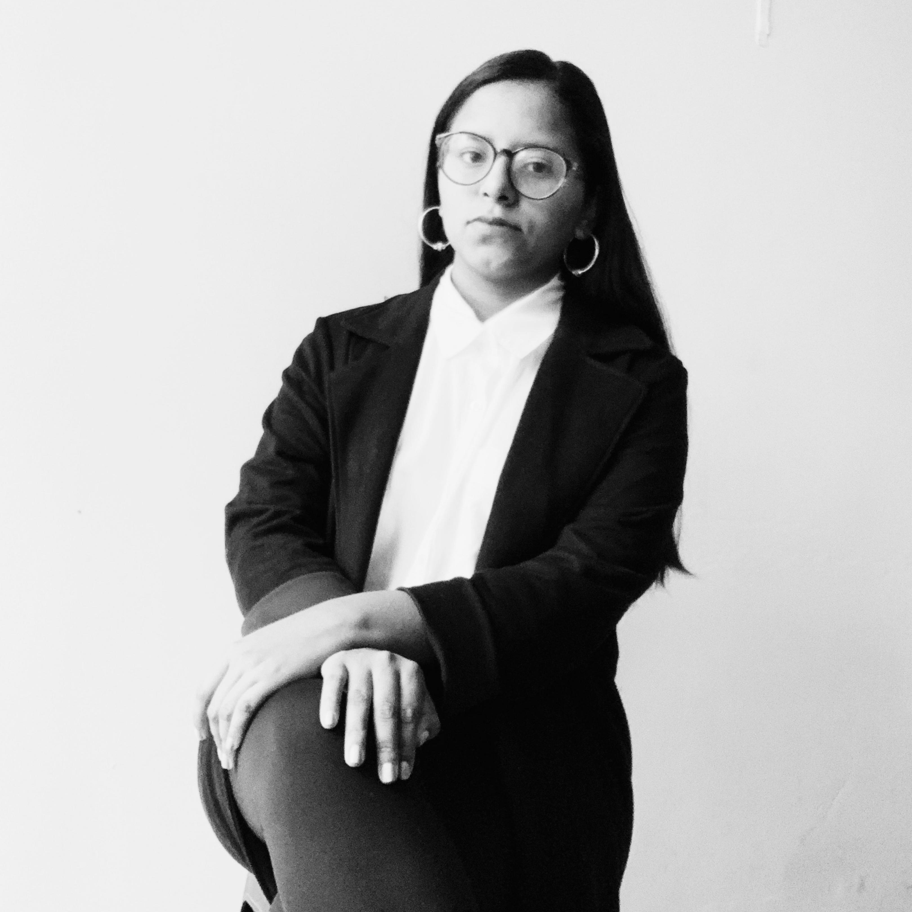

SOBRE MÍ
Hola, soy Vanessa Frey, tengo 22 años y curso el último ciclo de la carrera de Diseño y Gestión de Moda en la escuela Toulouse Lautrec. Me considero una persona creativa, proactiva y con gran facilidad de adaptabilidad.
Uno de mis pasatiempos favoritos es leer, pues me hacen sentir emociones muy fuertes y mantienen mi mente ocupada, también me gusta pintar al oleo, es algo que amo hacer aunque me frustre a veces por no saber qué pintar. Y algo que considero una terapia es la cocina, me gusta cocinar para mi familia, experimentar con nuevas recetas. Todas estas cosas ayudan a que mi mente sea más creativa y apasionada.